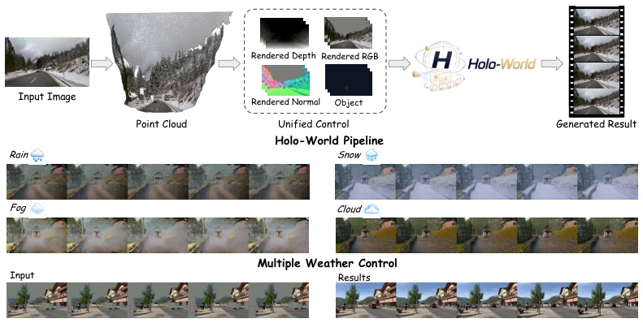
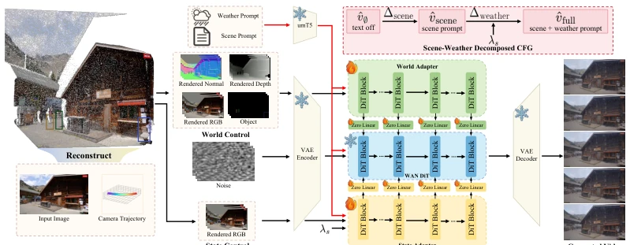
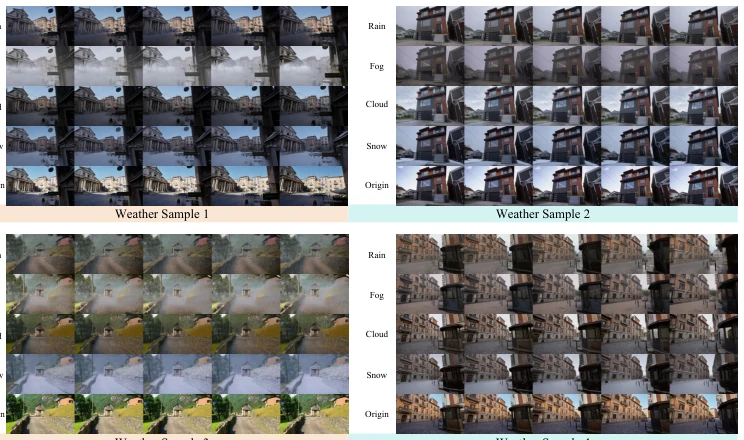
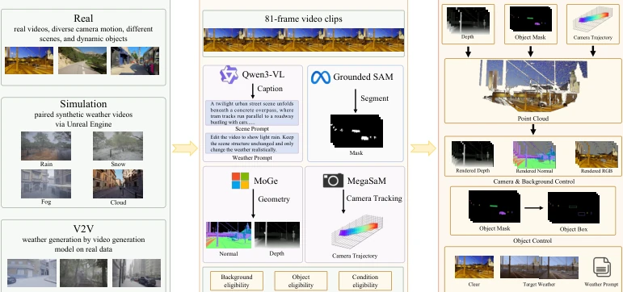
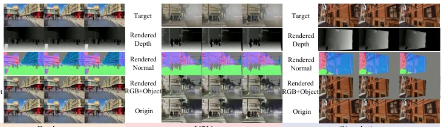

This paper attempts to integrate camera, object, and weather control into a single video world model; while it sounds comprehensive, reality is often stark. Holo-World's core selling point lies in "unification"; it no longer requires weather editing to rely on complete source videos like video-to-video post-processing effects, but instead starts from a single image. UniSA separates world maintenance and weather transfer into two parameter subspaces; this approach is quite clever, avoiding the risk of weather generation skewing the background structure. However, this method relies heavily on rendered geometric buffers (G-buffers) and depth priors, still far from true "creation from nothing". Moreover, the ICLR 2026 publication date raises suspicions about whether this is time travel or merely a preprint placeholder. Overall, it counts as a solid engineering optimization in the field of controllable video generation, but is far from the physical world simulation required for embodied intelligence; do not be fooled by the "World Model" title.
研究动机Motivation
当前视频世界模型正从生成视觉合理的视频转向动态可控世界，但控制维度往往是割裂的。相机控制方法（如 Ren et al., 2025）只管视角变化，物体控制（如 Li et al., 2025b）只管动态实体，天气生成（如 Liu et al., 2026）则多作为视频到视频编辑处理。这种分离导致模型无法在单图条件下同时维持场景结构并切换天气状态。现有方法要么依赖完整源视频提供未来布局，要么依赖重建场景，缺乏从单帧出发联合控制相机、物体和天气的数据与建模支持。Holo-World 旨在解决这一 gap，实现 first-frame-anchored 的 source-to-state 设置，让模型在保持场景一致性的同时，响应显式的天气指令。
Current video world models are shifting from generating visually plausible videos to dynamic controllable worlds, yet control dimensions are often fragmented. Camera control methods (e.g., Ren et al., 2025) only manage viewpoint changes, object control (e.g., Li et al., 2025b) only manages dynamic entities, while weather generation (e.g., Liu et al., 2026) is mostly processed as video-to-video editing. This separation results in models being unable to maintain scene structure and switch weather states simultaneously under single-image conditions. Existing methods either rely on complete source videos to provide future layouts or depend on scene reconstruction, lacking data and modeling support from a single frame to jointly control cameras, objects, and weather. Holo-World aims to address this gap, implementing a first-frame-anchored source-to-state setting, allowing the model to maintain scene consistency while responding to explicit weather instructions.

Figure 1: Unified state control in Holo-World. Holo-World jointly controls camera motion, object dynamics, and weather state within the same observed world.
方法Method
Holo-World 的整体流程分为数据构建与模型训练两部分。数据方面，构建 HoloStateData，将真实视频、合成天气视频及 V2V 生成视频统一标注为包含相机轨迹、物体掩码、几何缓冲（深度/法线）及天气提示的样本。模型基于冻结的 Wan 视频骨干，引入 Unified Scene Adapter (UniSA)。UniSA 包含两个不共享参数的子空间：World Adapter 负责学习相机、背景和物体布局的保持残差，State Adapter 负责从源外观锚点学习天气转移残差。训练时，通过 World Control (Rrgb, Rdepth, Rnormal, Cbbox) 和 State Control (Rrgb) 注入，适配层插入 DiT 层 {0, 5, 10, 15, 20, 25}。推理阶段，采用 Scene-Weather Decomposed CFG (SW-CFG)，将提示词分为场景提示和天气提示，分别计算 scene residual 和 weather residual，通过独立缩放系数（sscene, sweather）指导去噪，避免全局 CFG 导致天气增强时背景过饱和或失真。
The overall process of Holo-World is divided into two parts: data construction and model training. Regarding data, HoloStateData is constructed, unifying real videos, synthetic weather videos, and V2V-generated videos as samples annotated with camera trajectories, object masks, geometric buffers (depth/normal), and weather prompts. The model is based on a frozen Wan video backbone, introducing a Unified Scene Adapter (UniSA). UniSA comprises two non-shared parameter subspaces: the World Adapter is responsible for learning residuals for maintaining camera, background, and object layouts, while the State Adapter is responsible for learning weather transfer residuals from source appearance anchors. During training, injection occurs via World Control (Rrgb, Rdepth, Rnormal, Cbbox) and State Control (Rrgb), with adapter layers inserted into DiT layers {0, 5, 10, 15, 20, 25}. During the inference stage, Scene-Weather Decomposed CFG (SW-CFG) is adopted; prompts are split into scene prompts and weather prompts, calculating scene residuals and weather residuals respectively. Independent scaling coefficients (sscene, sweather) guide denoising, avoiding background oversaturation or distortion caused by global CFG during weather enhancement.

Figure 3: Overview of Holo-World. Given a first frame and factorized source-to-state controls, Holo-World decomposes controllable video generation into world-preservation and weather-transfer residual paths.
Experiments are conducted on a 150-sample benchmark of HoloStateData, divided into two parts: Real (world maintenance) and Weather (weather transfer). Comparison baselines include camera control models such as Uni3C and GEN3C, as well as weather editing models such as Cosmos-Transfer2.5 and Wan2.7-Edit. Evaluation metrics cover VBench-I2V, camera/object control errors (RotErr, TransErr, ObjMC), and weather alignment. Results show that Holo-World achieves the best VBench scores and control accuracy on the Real subset, and achieves an 86% weather alignment rate on the Weather subset, outperforming V2V baselines. Ablation studies indicate that G-buffer control improves background PSNR, UniSA's separated parameter space improves background metrics, and SW-CFG significantly enhances weather generation effects without compromising scene consistency.

Figure 7: Multi-weather state control. With the same source world and camera/object controls, changing only the target weather prompt produces different weather videos.
其他图片Other Figures

Figure 2: HoloStateData construction pipeline. These annotations are converted into source-side rendered controls and object controls, while paired target-weather videos provide supervision for weather-state transfer.

Figure 10: HoloStateData example. The visualization shows how one video record is converted into the source first frame, rendered world controls, object controls, and weather-state annotations used by the unified source- to-state training interface.